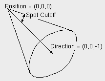

| vfr - Volflex rendering API - |
class vfrLight
Class Hierarchy
Header files
- #include "vfrLight.h"
Definitions
- virtual ~vfrLight()
- vfrLightオブジェクトを破壊する。
public methods / variables
- void render()
- レンダリングを行う
- void reset()
- ライティング属性をリセットする。
属性の初期値(デフォルト値):
| Ambient | (0.2f, 0.2f, 0.2f, 1.0f) |
| Diffuse | (1.0f, 1.0f, 1.0f, 1.0f) |
| Specular | (1.0f, 1.0f, 1.0f, 1.0f) |
| Spot Cutoff | 45.0° |
| Light Type | LT_DIRECTIONAL |
| On/Off | FALSE(= OFF) |
- void setOnOff(const Bool on)
- ライトのON/OFFを設定する
- on ON/OFF(TRUE=ON)
- Bool isOn() const
- ライトが点灯しているかを返す(TRUE:点灯)
- void setLightType(const LightType lt)
- ライトの種類を設定する
- lt ライトの種類
- LightType getLightType() const
- ライトの種類を返す
- void setShowMode(const LightType sm)
- ライトの表示モードを設定する。
TRUEの時、ライトの種類に応じて、位置、方向を示す
オブジェクトを表示する。
- sm ライトの表示モード
- Bool isShow() const
- ライトの表示モードを返す
- void setAmbient(const vector4 amb)
- 環境光強度を設定する
- amb 環境光強度(R, G, B, A)
- void setAmbient(const float r, const float g, const float b, const float a)
- 環境光強度を設定する
- r 環境光強度(R成分)
- g 環境光強度(G成分)
- b 環境光強度(B成分)
- a 環境光強度(A成分)
- void getAmbient(vector4 amb) const
- 環境光強度を取得する
- amb 環境光強度格納領域(R, G, B, A)
- void setDiffuse(const vector4 dif)
- 拡散光強度を設定する
- dif 拡散光強度(R, G, B, A)
- void setDiffuse(const float r, const float g, const float b, const float a)
- 拡散光強度を設定する
- r 拡散光強度(R成分)
- g 拡散光強度(G成分)
- b 拡散光強度(B成分)
- a 拡散光強度(A成分)
- void getDiffuse(vector4 dif) const
- 拡散光強度を取得する
- dif 拡散光強度格納領域(R, G, B, A)
- void setSpecular(const vector4 spc)
- 鏡面光強度を設定する
- spc 鏡面光強度(R, G, B, A)
- void setSpecular(const float r, const float g, const float b, const float a)
- 鏡面光強度を設定する
- r 鏡面光強度(R成分)
- g 鏡面光強度(G成分)
- b 鏡面光強度(B成分)
- a 鏡面光強度(A成分)
- void getSpecular(vector4 spc) const
- 鏡面光強度を取得する
- spc 鏡面光強度格納領域(R, G, B, A)
- void setSpotCutoff(const float sc)
- スポットライトカットオフ角度を設定する
- sc カットオフ角度(degree)
- float getSpotCutoff() const
- スポットライトカットオフ角度を返す(degree)
- int getLightNum() const
- シーン内の照明番号を返す(0 〜 VFR_LIGHT_MAX -1)
Description
vfrLightクラスは、光源(ライト)を表すオブジェクトクラスである。
vfrLightクラスは、vfrSceneクラスからのみインスタンスが作成される。
vfrLightのインスタンスの取得は、vfrSceneクラスを通してのみ行う事ができる。
vfrLightクラスは、以下の3種類の中からsetLightType()メソッドを用いて
ライティングタイプの選択ができる。
- LT_DIRECTIONAL
- 平行光源。光源は無限遠にあり、光強度は減衰しない。
光の方向ベクトルは、vfrLightオブジェクトのローカル座標系における (0,0,-1) であり、
vfrLightオブジェクトの幾何変換によって方向を変える(平行移動、スケーリングは無意味)。
- LT_POINT
- 点光源。光源から全方向に同じ強度で放射される。光強度は減衰しない。
光源位置はvfrLightオブジェクトのローカル座標系における (0,0,0) であり、
vfrLightオブジェクトの幾何変換によって位置を変える(回転、スケーリングは無意味)。
- LT_SPOT
スポットライト光源。光源から特定の範囲(円錐状の領域)にのみ照光する。光強度は減衰しない。
光源位置はvfrLightオブジェクトのローカル座標系における (0,0,0) 、
方向ベクトルは (0,0,-1) であり、
vfrLightオブジェクトの幾何変換によって位置と方向を変える(スケーリングは無意味)。
照光範囲はsetSpotCutoff()メソッドを用いて、
方向ベクトルを中心とした円錐の軸と母線の角度(degree)で設定する。
|

Fig.1 Spot Light
|
vfrLightオブジェクトによる照光は、オブジェクトのマテリアル
に設定された反射係数との関係により、影響が決定される。
最終的にレンダリングされるオブジェクトの表面の色は、以下のように決定される。
Color = EMImat +
Σ{ AMBmat × AMBlig
+ (max[(S・N), 0])SHImat × SPCmat × SPClig
+ max[(L・N), 0] × DIFlig × COLORobj
},
Color : レンダリングされる色,
EMImat : マテリアルの放射光色,
AMBmat : マテリアルの環境光反射係数,
AMBlig : ライトの環境光強度,
SHImat : マテリアルの鏡面反射指数,
SPCmat : マテリアルの鏡面反射係数,
SPClig : ライトの鏡面光強度,
DIFlig : ライトの拡散光強度,
COLORobj : オブジェクトの色,
S : 光源、頂点、視点によって構成される角を2等分するベクトル,
L : ライトの方向ベクトル,
N : オブジェクトの頂点における法線ベクトル.
尚、オブジェクトのレンダリングモードが
RT_NOLIGHT, RT_WIRE または RT_POINTの場合は、
照光による影響はなく、オブジェクトの色でレンダリングされる。
Instance
vfrLightオブジェクトは、シーンがインスタンスされると
シーンのメンバーとしてインスタンスされる。
vfrLightオブジェクトはシーンからのみしかインスタンスされない(参照: vfrScene/Lights)。
インスタンスされた時点では、vfrLightオブジェクトはリセットされた
属性になっているが、シーンの 0 番目のライトだけは ON が初期状態となる。
Feedback
vfrLightオブジェクトはフィードバックテストは常に合格数 0 を返す。